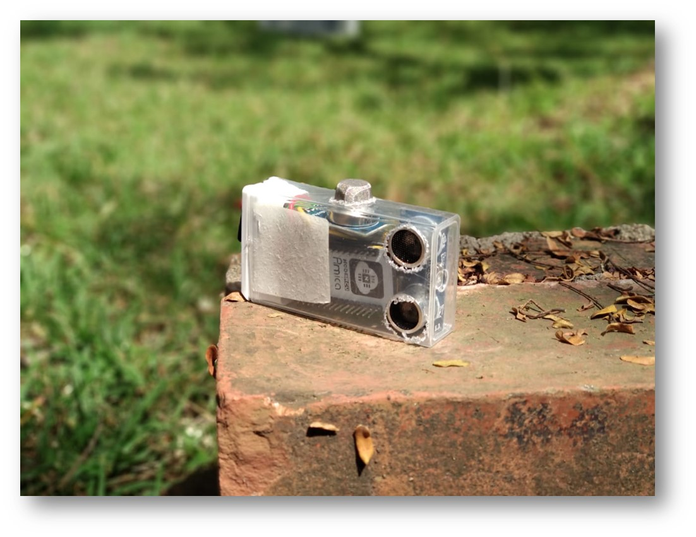
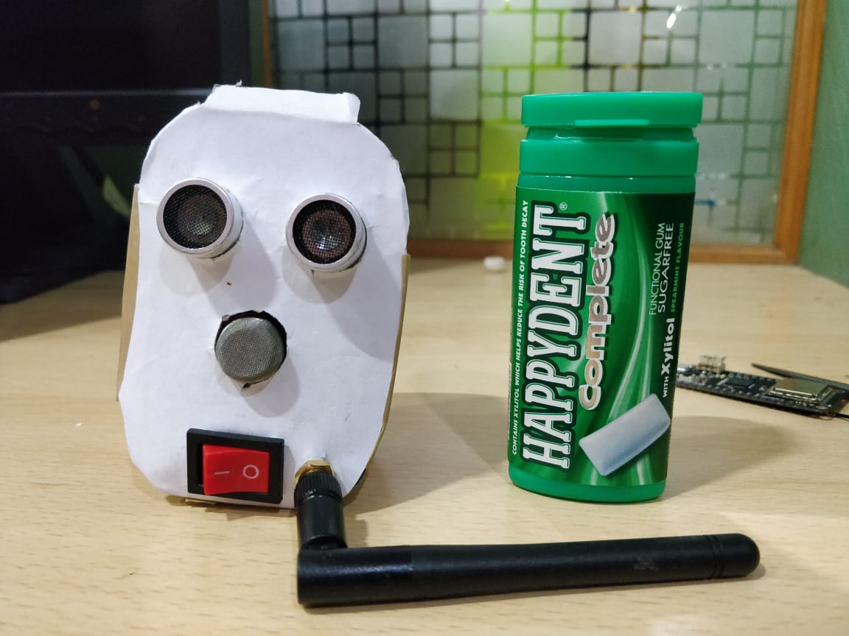

The current process of sewer line cleaning is reactive rather than proactive. Phone calls are registered in an event of clogged sewer line in an area. Moreover, it's difficult for manual scavengers to zero-in on the point of error. They use a hit-and-trial method to carry out the cleaning process in multiple manholes in the affected area, thereby wasting a lot of time. Another point of concern is the high concentration of toxic gases such as hydrogen sulfide and carbon monoxide and the suffocating gas methane.
Solution
The prototype is a small device - with a form-factor of a pen - embedded onto the lid of a manhole. The lower section of the device which is exposed to the inside of the manhole while the lid is closed - comprises of sensors which detect the level of water inside the sewer and sewer gases which include methane, carbon monoxide, carbon dioxide and nitrogen oxides. The data is gathered to a master station which communicates these devices installed at each manholes over LoRaWAN and sends the data to a cloud server which hosts a dashboard for monitoring purposes. Installation of these devices throughout the city will allow a preventive solution to identify and pin-point the location of clogged sewer line before the wastewater reaches the surface. Following image shows the real-time mapping of each node represented by the red color to indicate a clogged manhole and green to indicate a non-clogged manhole. The concentration of each gas is available through the employee's phone where the ticket is enabled during the job. Once the job is complete, the BBMP authorities get an acknowlegment for the same and a garbage pick-up van is routed to that specific manhole. This establishes a communication link between the two authorities.
Here are the prototype development phases




1 comment
Hi, Really noble idea! I had a question about battery life?
ReplyThanks Rahul, Deep sleep programming allows each node to have a battery back-up for a year.
Reply